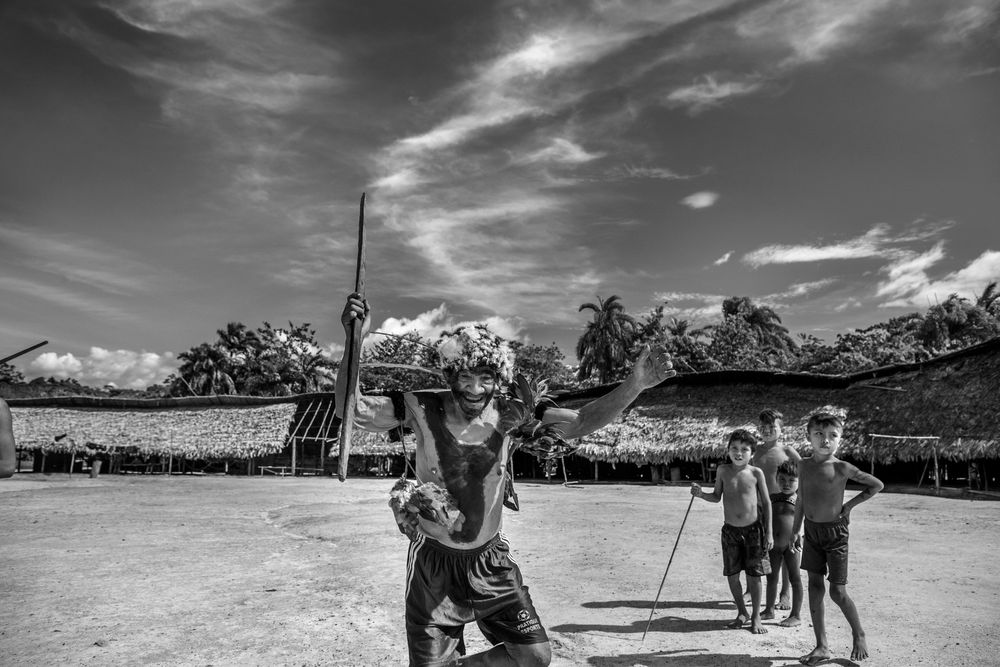

"#998" — The community of Piaú, Yanomami Indigenous Territory, Amazonas, 2019
Amazônia, 2022 · Foto Digital · #998 ERC-721
R$ 400 (floor price atual) + R$ 1.300 (Tablet emoldurado)
Os Yanomami são o maior grupo indígena de baixo contato do mundo — cerca de 40.000 pessoas no Brasil e Venezuela. O xamanismo é central em sua cultura. Em 1993, a comunidade de Haximu sofreu um massacre que resultou na única condenação por genocídio na história da Justiça brasileira.
Ao integrar esta obra ao ambiente digital, Salgado amplia o alcance de sua mensagem, aproxima novas gerações de seu trabalho e reafirma o papel da fotografia como instrumento de transformação e consciência coletiva.
| Artista | Sebastião Salgado |
| Coleção | Amazônia — 2022 |
| Mídia | Foto Digital |
| Token | #998 ERC-721 (Ethereum) |
| Contrato | 0xf1f036ce…64fb80fc |
| Arquivo | Ver no Arweave |
| Procedência | Sotheby's (lançamento original) |